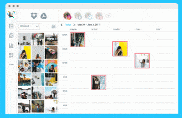
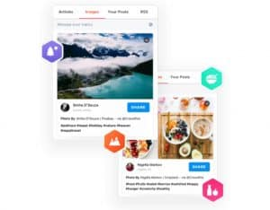
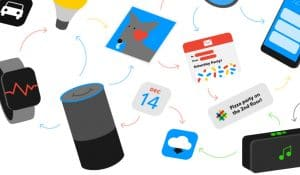
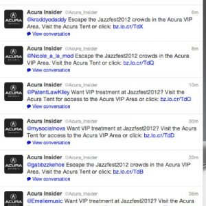

Introducing the wonderful world of social media automation.
Do you ever wish that you just had a few extra hours in your day?
No matter how hard you try, it may seem as though you can never really get a handle on your schedule. You’re always rushing from one task the next, with not enough time to breathe – never mind relax. On the one hand, you know that running a business or a marketing campaign is hard work. On the other hand, you also feel like it shouldn’t be as stressful or overwhelming as it currently is.
When time is scarce, it’s tempting to give up on social media entirely and tell yourself that you can get by without an Instagram campaign or a Twitter presence. However, the truth is that social media is the key to your success in the digital world. According to Statista, there are 3.09 billion social media users online today. That’s an audience that you just can’t ignore.
So, how do you handle your social media presence, and find enough time for eight hours of uninterrupted sleep each night? That’s where social media automation comes in.
What is Social Media Automation?
Social media automation tools come in many different formats, depending on what you want to do online. However, regardless of whether you choose an Instagram automation tool or a Twitter automation service, you can rest assured that all of these solutions will do the same thing – free up some of the time you spend online.
With social media automation, you use digital strategies to automate or semi-automate the tasks you complete on social media each day. This might include scheduling your posts ahead of when you want to publish them or responding automatically to customers in your DMs. Automating your social media publication, engagement, and management strategies can reduce the stress associated with an immersive online marketing campaign.
Some of the benefits of social media automation include:
- Save valuable time: Scheduling your posts in advance means that you have more time left over in your day-to-day schedule. You can use this for running your business, taking advantage of new opportunities, or planning future social content.
- Engage your audience: Social media automation tools can automatically notify you whenever someone gets in touch with your brand. You can even use bots to let your customers know that you’ll get back to them asap, so they don’t lose interest.
- Simplicity: Most automation tools are incredibly easy to use. They help you to get more control over your online strategy without hiring a social expert.
- Business growth: The more consistent and active you stay on your social media channels, the more you’ll drive traffic to your brand and website.
- Strengthen your brand message: Planning and automating your content allows you to send a more consistent message to your audience. With Instagram automation tools, you can even plan how your grid will look over time to improve your visual impact.
What Can Companies Do with Social Media Automation?
Although many people understand the basics of social media automation, they don’t know what they can do with an Instagram automation or Facebook management tool. There’s a common misconception in the marketplace that automation is all about making your social media strategy less of a hands-on experience. However, the truth is that automation is about giving you more time to maximize your online presence. It’s not about removing the human touch from your social media strategy entirely.
With a Twitter automation strategy, or some other social media tool, you can:
- Schedule your posts according to the times that you know your audience is active online. This improves your chances of engagement and also helps you rise to the top of the Instagram Explore page too.
- Curate content from the blogs your customers appreciate. Automation tools allow you to collect content from other brands and users and repost it on your page (with their permission of course). This helps to expand the diversity of your profile.
- Create custom responses for better customer service: With bots and automated tools, you can let your audience know that you care when they reach out online. Even if a human being isn’t available to answer their questions, you remind them that you’ll be around to help as soon as you can.
The Limitations of Social Media Automation
As valuable as social media automation can be, it’s not the answer to every issue you have with your online marketing campaigns. Ultimately, these tools are intended for improving the experience that your community has with your brand and boosting efficiency. You’ll still need your social strategy to have a human touch if you want to thrive in today’s marketplace.
Your automation tools can’t:
- Replace meaningful conversations with your community or genuine responses to comments and questions sent by your tribe.
- Keep posting the same content consistently without anything fresh or different. You might be able to use Instagram automation to post photos on your Insta profile, but you’ll still need to create videos, Live posts, and Stories with a human expert.
- Create creative content on your behalf: It’s still up to you to find out what your customers want to see on your social media platforms and design the content that speaks to them.
Social Media Automation Tools to Try
So, how can you get started with your social media automation campaign?
Well, the first thing you’re going to need is the right set of tools.
There are plenty of options out there, and they all come with their own specific benefits to consider. We’ve put together a list of some of our favorites to set you on the right path.
1. Upleap (for Instagram Management)
If what you really want from your automation tool is something that will help you to manage your Instagram campaigns, then Upleap could be the perfect solution. This Instagram automation service is different to some of the other options you’ll find on the market. Rather than using bots and AI to manage your solution, Upleap gives you access to a dedicated human account manager to help you make the most out of your social media campaigns.
With Upleap, your social media manager will get to know your company and how it works, before constructing a unique social media strategy that’s designed just for you. There are no unscrupulous bots to worry about for people who are concerned that automation might get them on the wrong side of the Instagram algorithm. Plus, Upleap comes with a free trial to set you off on the right foot.

2. Later (for Scheduling)
If the aim of your social media automation strategy is to make sure that you’re posting your content at the right time each day, then you’re going to need a scheduling tool. Later is an Instagram automation solution that also works with a host of other social media channels. This tool will allow you to load up your posts in advance, so you’re always ready to keep your profile looking fresh.
Later gives you the option to automatically cross-promote the content that you publish on Twitter, Facebook, Pinterest, and more. This means that you can draw more eyes back to your content from across the web. There are even a host of templates to help you make the most of your professional Instagram Stories strategy and keep your grid looking fantastic too.

3. Kenji.AI (For an Automation Bot)
These days, bots are some of the most incredible ways to get access to extra social media help, without having to invest in human intelligence. Kenji.AI is one of the most innovative Instagram bots on the market because it saves you from the stress of potentially posting dangerous content online. Kenji.AI uses artificial intelligence to determine what kind of hashtags you need to use, and what content you should be interacting with online.
Explicitly designed for Instagram automation, Kenji.AI goes beyond the basic features of standard bots to ensure that you’re making a real difference to your social media campaign. You won’t be just liking and commenting on things at random. Kenji.AI also allows you to track the performance of your campaigns over time through a simple and easy-to-navigate dashboard.

4. Crowdfire (For Account Management)
Crowdfire started as a simple app that users could access to track their unfollows on social media. Since it first emerged in the marketplace, however, this tool has grown into something so much more immersive. Not only can you use Crowdfire to view new unfollows and schedule content according to your specific needs, but you can also access daily advice from in-depth data analytics too. This means that you’ll always have ideas on how to take your campaign to the next level.
Crowdfire is excellent for cleaning up your social media strategies, ensuring you’re placing your content in front of the right people, and helping you to engage your audience. There’s a viral hashtag tool available, a photo suggesting tool for Instagram, and even in-depth Twitter automation with detailed stats and analytics.

5. IFTTT
One of the best-known social media automation tools on the market today, IFTTT is a unique solution that gets your apps to communicate more effectively. IFTTT is an intelligent free tool that gives businesses and marketing managers the power to connect all of their most-used apps, tools, and platforms in the same environment. The central software works to align all of the apps that you use and allows you to create specific automation funnels or “recipes” that create chain reactions across your campaigns.
For instance, you might use IFTTT social media automation to automatically re-post any content from Instagram onto your Facebook channel whenever you add a specific hashtag to your scheduling app. You could also use the tool to automatically save everything that you publish on Instagram to Dropbox, so you can come back and use the same content again in the future for your Stories and other promotions if necessary.

Making the Most of Social Media Automation
One important thing to keep in mind is that there’s more to social media automation than just downloading and using the right tools. Ultimately, automation can quickly become an addictive experience, particularly when it frees up so much of your valuable time. However, while automation tools can be very beneficial to today’s businesses, they can also be very dangerous if you don’t know how to use them properly.
Spend too much time with your Instagram automation and Twitter automation tools, and you could risk losing the respect and adoration of your fans on social media. After all, it’s essential to keep in mind that social media is designed to connect human beings. People don’t want to be constantly hearing from bots on their feeds.
Learn from examples like Acura Insider:

This company made the mistake of going too far with their Twitter automation. They started sending out invites to anyone using a specific hashtag, which didn’t make much sense when they were inviting people to an event in a specific location.
Not everything in your campaign should be automated.
You’ll need to figure out how to walk the line between using human compassion and creativity in your social media campaigns and relying on bots for help.
Finishing Thoughts
Social media marketing automation is a powerful tool, but it’s something that all companies need to use with care. Before you start downloading all the automation tools you can find and setting up unique funnels for your campaigns, make sure that you know what you’re getting into.
Have a strategy for figuring out when you can use automation to enhance and improve your social media strategy, and when you need to start using human insight instead. Automation tools will never be able to replace human beings altogether, but they can at least help us to get more done.
Stay tuned with Social Follow for more tips on Instagram, social media, and automation, and contact us today if you want to learn how we can help your follower count to grow!


1 Comment